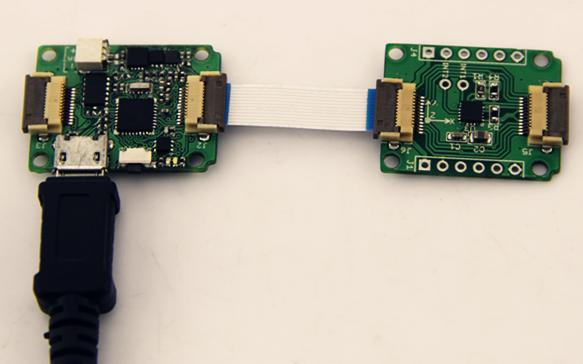
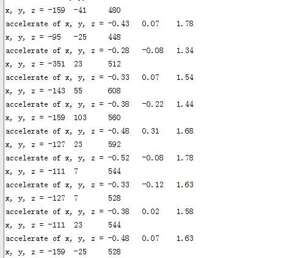

The H3LIS331DL is a low power high performance 3-axis linear accelerometer belonging to the “nano” family, with digital I2C serial interface standard output.
The device features ultra low power operational modes that allow advanced power saving and smart sleep to wake-up functions.
The H3LIS331DL has dynamically user selectable full scales of ±100g/±200 g/±400 g and it is capable of measuring accelerations with output data rates from 0.5 Hz to 1 kHz.
Here below we show you how to read the raw data from this accelerometer.
Like other Xadow modules, you need to connect Xadow 3-Axis Accelerometer to Xadow Main Board before upload the test code to Xadow Main Board to get the Accelerometer information.
The hardware Installation:

Note: when connect Xadow 3-Axis Accelerometer to Xadow Main Board, you should concern about the connection direction. The connection method is that the unfilled corner of one xadow module need to connect to the right angle of another module(see four corners of each xadow module).
After uploading code, open the serial monitor to obverse the test result. The outputs of this sensor are 3-axis acceleration info which is converted into the unit of gravity, "g".

If you have questions or other better design ideas, you can go to our forum or wish to discuss.
Copyright (c) 2008-2016 Seeed Development Limited (www.seeedstudio.com / www.seeed.cc)